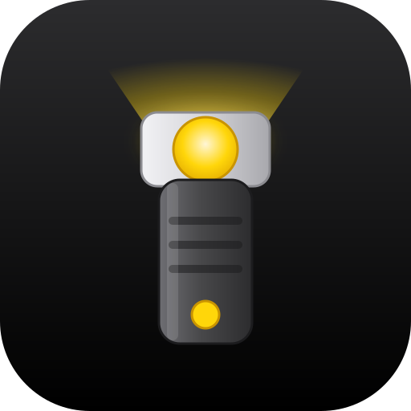
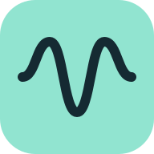
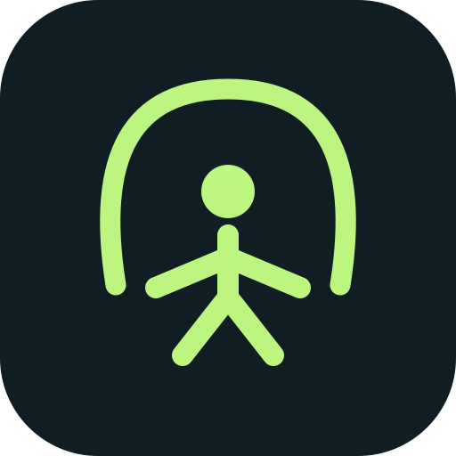
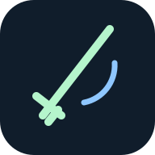

Your pocket toolkit
Simple tools for your phone. Pick an app to get started.

Light up your screen. Choose a color and set the brightness.

A pure sine wave. Adjust frequency from 1 to 30,000 Hz and control the volume.
Open an MP4 and inspect it one frame at a time with precise, touch-friendly controls.
Connect a Bluetooth or USB-C MIDI keyboard and see the notes you play.

Jump without a rope. Count with your phone’s motion sensor and save workouts on your device.
Record three-axis motion, save timestamped CSV data, and export to Google Drive.

Track kendo swing cadence, review your practice, and calibrate your pocket-motion counter.